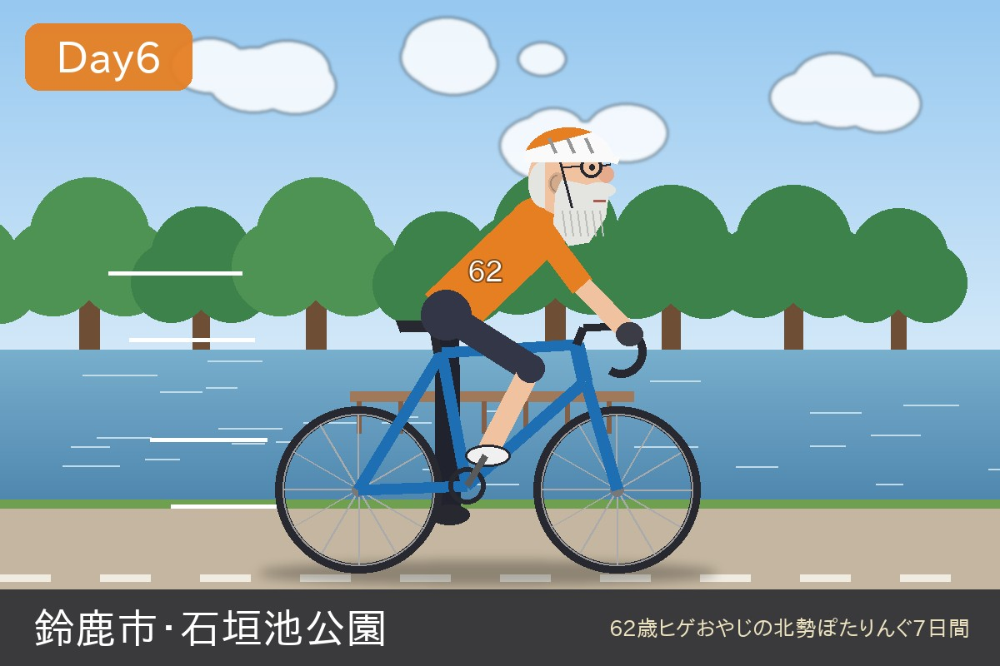

6日目はいよいよ鈴鹿市へ。大きな池を中心に広がる石垣池公園を訪ねます。
石垣池公園は、名前のとおり石垣池を中心にした公園。水辺の景色を眺めながら、ゆったりした時間が過ごせます。運動施設もあり、地元の方の憩いの場になっています。
池のまわりは風が抜けやすいので、帽子やヘルメットのあご紐はしっかりと。散策路では歩行者優先、すれ違うときはベルではなく「通ります」の一声を。
水面にうつる空を見ていると、仕事に追われていた頃の自分に「もっと休め」と言ってやりたくなります。
それではまた明日。安全運転で、ゆっくり行きましょう。
―― 62歳ヒゲおやじ
#サイクリング #鈴鹿市 #石垣池公園 #シニアライフ #ポタリング